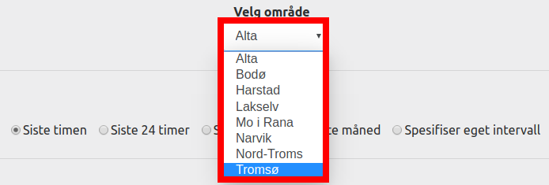
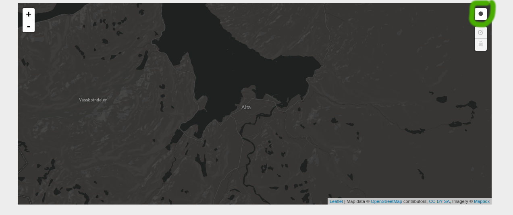
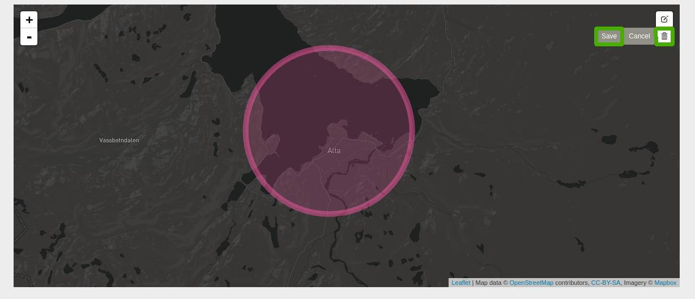
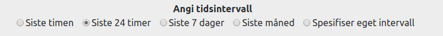
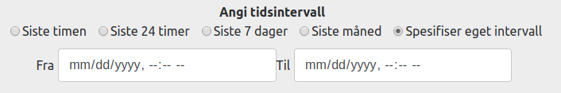
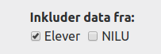

Velg område
For å angi søkeområde kan du:
-
Velge område fra nedtrekksliste

Ved å velge område fra nedtrekkslisten, vil søket ta utgangspunkt i et sentrumsnært punkt i området og returnere
alle datapunkter innenfor en 7 km radius.
-
Angi område på kartet
Dersom du ønsker å angi koordinater og radius selv, eller velge et område som ikke er angitt på listen, kan dette gjøres
ved å markere et område på kartet på følgende måte: klikk på knappen med sirkel på oppe i høyre hjørne, flytt
pekeren til ønsket punkt på kartet, og klikk og dra ut pekeren for å lage en sirkel av ønsket størrelse.

Dersom sirkelen ikke ble som dere ønsket, kan du slette den ved å klikke på søppelbøtten i øvre høyre hjørne,
klikke på sirkelen som du vil fjerne og trykke "save".

TIPS: Bruk gjerne listen fra forrige punkt til å navigere deg rundt på kartet når du skal markere et egendefinert
område. Dersom du har laget en sirkel på kartet, vil koordinatene fra denne overstyre listevalget når du trykker
"Søk".
Velg tidspunkt
For å angi tidsrom kan du:
-
Velge et av de forhåndsdefinerte alternativene

-
Spesifisere eget tidsrom.

Velg datakilder
Det er mulig å hente ut målepunkter fra elever og fra NILU. For å angi datakilde, kryss av for ønsket alternativ.

MERK: NILU har kun målestasjoner i Tromsø, Bodø, Harstad og Narvik.
MERK2: Dersom du gjør et egendefinert områdesøk, vil ikke data fra NILU sine målestasjoner komme med.
Last ned data
For å laste ned data velger dere et område fra nedtrekkslisten eller direkte på kartet, velger tidsområde og datakilde og
trykker på "Last ned"-knappen.